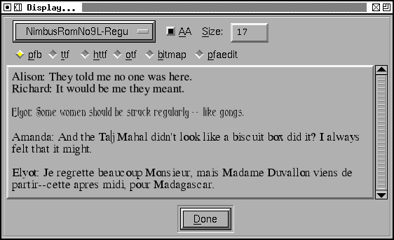

This dialog allows you to display text in any fonts you have loaded into FontForge and see how they look on the screen and together.
The textarea should behave like any of FontForge's textarea's (except this one is a lot slower to respond than others), it also allows you to select any piece of text in it and change the font and pixel size.
First make a selection (or type ^A to select everything), then choose which font you want and how you want it rasterized.
You may also select how the font is rasterized. The first four choices (pfb, ttf, httf, otf) will be rasterized by freetype, and the display is very similar to that used by X (so this is an easy way of checking how your fonts will look on the screen without going to the bother of installing them.). The various options specify in what format the font is passed to freetype:
The "bitmap" option allows you to pick from any of the generated bitmap (or greymap) fonts that have already been generated and reside in the database.
The "fontforge" option will invoke FontForge's own rasterizer. FontForge's rasterizer generates appallingly bad bitmaps.
You can choose whether you want the font to be antialiased or not.
And different bits of text can have different settings, so you can compare them and decide which is least worse. Also you can compare two different fonts and see how well they work together.
There is a popup menu on the right mouse button.
As with the the print dialog you may Import text from a file. The file must either be in the current local encoding, or UCS2 (unicode) or UTF8 (unicode). If it is in unicode the first character in the file must be U+FEFF. You can also save the contents of the field into a file (it will be in UTF8 and preceded by U+FEFF) by typing ^S.
You can also generate an image of this window by typing Ctl-Shft-S.
This dialog does not currently handle kerning or anchored marks. It should handle bidirectional text and composing characters.